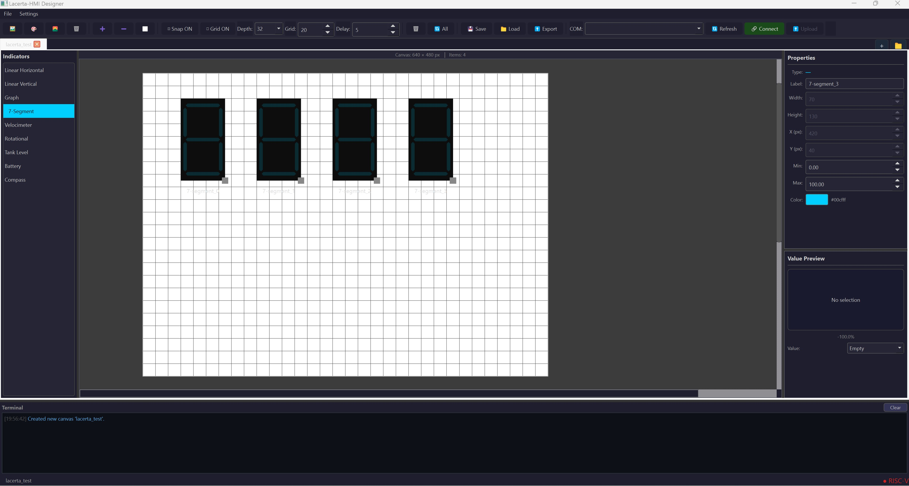

System Architecture Overview
The Lacerta platform consists of four major components: the custom silicon implementation, the PCBA hardware, the firmware layer, and the interface design software. Together, these elements form a complete open-source system for creating, deploying, and operating customizable embedded graphical interfaces.
Custom Silicon (Caravel User Project)
The core of the Lacerta platform is a custom ASIC implemented in the SKY130 process and integrated inside the Caravel user project area. This subsystem realizes the hardware graphics engine that receives interface commands, updates the internal frame data, and generates the video stream presented on the display.
The Lacerta ASIC follows a memory-centric architecture. Configuration data can be loaded from an external host through UART or issued internally by the embedded Caravel RISC-V processor. These commands are routed through the Wishbone interconnect to the rendering logic, which updates the frame contents stored in memory. The VGA controller then reads that memory and continuously converts it into the output video signal.
The ASIC includes the following main modules:
- UART configuration interface
- Embedded Caravel RISC-V control processor
- Wishbone master and slave interfaces
- Command arbiter and decoder
- Display generation and mask-generation logic
- Memory subsystem and main frame memory
- VGA controller

Figure 5. Block diagram of the Lacerta ASIC inside the Caravel environment. The figure shows how a host computer or the embedded Caravel RISC-V processor sends commands through UART and Wishbone interfaces to the command arbiter, rendering logic, and memory subsystem; the updated frame data is then read by the VGA controller to drive the screen.
UART Configuration Interface
The UART configuration interface provides the external entry point for loading or updating the graphical interface. A host computer can send commands, parameters, and interface data through this serial channel, allowing the system to be configured without directly modifying the hardware.
In the architecture shown in Figure 5, the UART block acts as a bridge between the external host and the internal control path. It forwards incoming data toward the command-processing logic, enabling interface definitions, state updates, and control values to be injected into the ASIC during operation.
Embedded Caravel RISC-V Control Processor
The embedded Caravel RISC-V processor acts as the local software-controlled supervisor of the Lacerta graphics engine. It can execute firmware that interprets interface behavior, reacts to sensor or communication inputs, and generates the commands required to update the visual state of the system.
Rather than generating pixels directly, the processor issues transactions over the internal bus to configure the rendering blocks and memory-mapped registers. This makes the RISC-V core responsible for high-level control, while the dedicated graphics hardware performs the time-critical rendering and display tasks.
Wishbone Master and Slave Interfaces
The Wishbone interfaces provide the internal communication path between the Caravel control domain and the Lacerta user-project hardware. The Wishbone master side is used by the embedded processor to initiate configuration and rendering transactions, while the Wishbone slave interfaces expose memory-mapped control and data ports inside the Lacerta ASIC.
These interfaces allow software to write commands, set parameters, and access internal buffers using a standard bus protocol. By relying on Wishbone, the design stays modular and compatible with the Caravel integration model, while also making each hardware block accessible in a structured and reusable way.
Command Arbiter and Decoder
The command arbiter and decoder receives commands arriving from the available control sources and determines how they should be executed inside the graphics engine. Its main role is to interpret the incoming transaction type, identify the target function, and route the request to the proper rendering or memory block.
This module also resolves control flow when multiple command sources are present, ensuring that commands are accepted in a predictable order. In practice, it serves as the control hub that translates bus-level requests into concrete operations such as drawing, updating buffers, or changing display parameters.
Display Generation and Mask-Generation Logic
The display generation logic converts decoded graphical commands into modifications of the stored image representation. It produces the pixel-level or region-level updates that must be written into memory so that the requested graphical elements appear on the screen.
The associated mask-generation logic supports selective updates by defining which portions of the frame or which pixel groups are affected by a given command. This is useful for rendering structured interface elements such as icons, bars, or indicators while avoiding unnecessary full-frame rewrites.
Memory Subsystem and Main Frame Memory
The memory subsystem stores the graphical data used to represent the current interface image. It includes the internal memory organization, access ports, and storage structures needed to support both command-driven writes and continuous display reads.
Within this subsystem, the main frame memory holds the active image or framebuffer that the VGA path will read for display generation. Because this memory is shared between rendering logic and video output, it forms the central data repository of the entire Lacerta graphics pipeline.
VGA Controller
The VGA controller is the final stage of the graphics pipeline and is responsible for transforming the stored frame data into a real-time video signal. It continuously reads the image data from memory in raster order and converts it into synchronized output timing and pixel values.
This block generates the horizontal sync, vertical sync, and video color signals required by a VGA display. By separating video timing generation from the command and rendering path, Lacerta can update the interface in memory while maintaining a stable and continuous screen output.
Lacerta Board
The Lacerta Board integrates multiple subsystems including power regulation, clock generation, communication interfaces, and peripheral connectivity into a single PCB. The board enables seamless interaction between a host computer and the embedded system through a USB-to-Serial (FTDI) interface, while also supporting external programming via SPI Flash memory.
At its core, the board host the main SoC, exposing essential signals such as GPIOs, power rails, and communication buses. Additional components such as a MEMS oscillator provide stable timing, while voltage regulators ensure reliable power delivery. The inclusion of accessible pin headers allows flexible expansion and testing, making the platform suitable for both prototyping and educational use.
The system also supports graphical output through a VGA interface, enabling the development of hardware-driven user interfaces. Debugging and control are facilitated through onboard LEDs and a reset button, providing immediate feedback and system management capabilities. Overall, the board offers an integrated environment for plug and play.

Figure 7. 3D rendering of the Lacerta Board, illustrating component placement and layout, including the Caravel/Lacerta chip placement, voltage regulators, clock generation circuitry, SPI Flash memory interface, GPIO headers, and peripheral connectors, providing a realistic view of the assembled hardware platform.
Firmware
The Lacerta platform includes a firmware layer that can run directly on the embedded RISC-V processor provided by the Caravel SoC. This firmware acts as the control layer responsible for managing the graphical interface and coordinating the interaction between system inputs and the Lacerta hardware rendering engine.
Firmware executed on the Caravel RISC-V processor is responsible for:
- receiving input data from sensors or external systems
- updating graphical elements in memory
- configuring interface parameters
- controlling the display generation circuit through the Wishbone bus
During operation, the RISC-V processor reads incoming data from communication interfaces and translates this information into graphical updates. The processor sends commands through the Wishbone master interface to the Lacerta display engine, which writes the corresponding graphical data into the system memory.
The VGA controller then reads the graphical data stored in memory and generates the video signal that produces the final image on the display.
In addition to running on the embedded processor, the Lacerta system can also interact with external microcontrollers. In this configuration, an external controller may collect sensor data or perform additional processing and then transmit the relevant information to the Caravel system using standard communication interfaces such as UART, SPI, or I2C.
This architecture allows Lacerta to operate in two modes:
- Standalone mode, where the Caravel RISC-V processor runs the firmware and directly manages the graphical interface.
- Co-processor mode, where an external microcontroller provides data or commands that are forwarded to the Lacerta display engine through the Caravel platform.
By leveraging the embedded RISC-V processor and the Wishbone interconnect, the firmware provides a flexible mechanism for controlling the graphical interface while maintaining compatibility with a wide range of embedded systems and sensor sources.
Interface Design Software
The fourth major component of the Lacerta architecture is the interface design software, which provides the user-facing environment for defining custom graphical interfaces.
A desktop graphical tool will allow users to create custom interfaces through a visual editor.
The software will export configuration files used by the hardware engine.
Through this visual editor, users can place and configure graphical elements such as buttons, bars, numeric indicators, and status displays. The tool allows the interface to be designed at a high level without requiring manual implementation of low-level graphics logic.

Figure 6. Graphical editor of the Lacerta Interface Design Software, where users can design custom embedded interfaces by arranging graphical components such as seven-segment displays, bars, and indicators.
Once the design is complete, the software generates a configuration file that describes the interface structure and parameters. This file is then loaded into the Lacerta hardware engine, enabling the ASIC to render the desired interface directly in hardware.
By combining these four components, Lacerta provides a complete and reproducible platform for configurable embedded HMIs, spanning interface creation, silicon implementation, runtime control, and physical system integration.